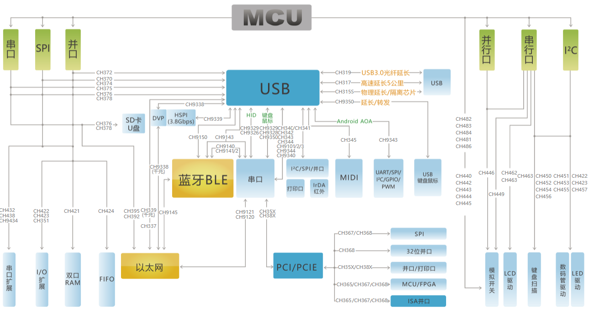

WCH¶
RISC-V Qingke 8051 USB-HS(PHY) USB-SS(PHY) USB-PD Ethernet 10Mbps(PHY) 1Gbps(MAC) HSPI SerDes UART BLE
公司简介¶
南京沁恒微电子 成立于2004年，是一家专注于连接技术和MCU内核研究的射频与高速数模混合集成电路设计公司，提供以太网、蓝牙无线网络、USB和PCI类等接口芯片及集成上述接口的MCU+单片机。
该厂商的转换芯片如CH340普及率非常高，凭借在有线连接上的积累，推出的可编程器件都具备非常丰富的连接资源如USB/UART/Ethernet，产品品类非常丰富，同时也具备很高的性价比。
优势确认¶
产品线丰富 低成本 连接
产品定位¶
专注于连接市场，开始向无线通信和自研核心发展，产品线非常丰富，在物联网市场有明显的识别度，弱势在于应用开发，厂商没有给出足够的引导案例和软件框架。
在有线连接领域，工程师接受度比较高，但是在大的项目中，还是不太愿意考虑
技术积累¶
主要的方案在USB领域，然后以太网连接领域，受限于开发资源，需要编程的器件在生态上并没有太大优势
Note
厂商例程代码还是有点“乱”，和大多数国产MCU厂商一样，软资源不够全面也不够规范，可能在这上面的资源投入很有限
通信领域¶
ETH++¶
SRAM/ROM |
Characteristics |
Ethernet |
||||
|---|---|---|---|---|---|---|
64KB/224KB |
480M USB |
100M PHY |
LQFP64M |
|||
32KB/250KB |
BLE 4.2 |
10M PHY |
QFN48/QFN28 |
|||
BLE 5.3 |
10M PHY |
|||||
BLE 5.3 |
10M PHY |
独立以太网方案 主要包括转并口/SPI/串口等

USB++¶
USB-HS¶
USB-HS(PHY) 480Mbps
芯片集成USB2.0 HS PHY器件实现高速通信(480Mbps)，在该细分领域上 ST 的STM32F7系列部分型号有USB2.0 PHY集成的方案。
Hint
建议45MB/s以内的应用场景
SRAM/ROM |
USB |
PHY |
MAC |
|||
|---|---|---|---|---|---|---|
64KB/224KB |
1 |
480Mbps |
100Mbps |
100Mbps |
||
64KB/256KB |
2 |
480Mbps |
10Mbps |
1Gbps |
||
64KB/256KB |
2 |
480Mbps |
10Mbps |
1Gbps |
USB-SS¶
USB-SS(PHY) 5Gbps 384MB/s
Hint
建议384MB/s以内的应用场景
USB |
USB Type |
USB Hub |
||||
|---|---|---|---|---|---|---|
1 |
OTG |
√ |
√ |
√ |
USB-FS¶
800KB/s
Hint
建议800KB/s以内的应用场景
Mark |
RAM |
Flash |
UART/SPI |
BLE |
USB |
Ethernet |
|
|---|---|---|---|---|---|---|---|
32K |
250K |
||||||
32K |
250K |

Hint
WCH 的MCU基本标配USB FS外设，而且在对标同类产品时，往往配置更多数量的USB，或者集成USB PHY器件
BLE++¶

Mark |
RAM |
Flash |
UART/SPI |
BLE |
USB |
Ethernet |
|
|---|---|---|---|---|---|---|---|
32K |
250K |
4/2 |
4.2(+3dBm) |
USB H/D |
10M |
||
18K |
512K |
4/1 |
4.2(+5dBm) |
USB H/D |
X |
||
32K |
1024K |
4/1 |
5.1(+6dBm) |
2 x USB |
X |
内核分类¶
MCS51¶
8051 MCU
SRAM |
Flash |
UART/SPI |
BLE |
USB |
Ethernet |
||
|---|---|---|---|---|---|---|---|
24MHz |
2KB |
16KB |
|||||
48MHz |
2KB |
60KB |
|||||
48MHz |
512B |
16KB |

Cortex¶

Note
2012年起陆续引入Cortex-M内核，我们加入了网络、USB2.0等高速接口，并设计了高速DMA仲裁机制，推出CH32F103等通用MCU芯片，适用于软件兼容、硬件引脚兼容、接口更专业的成熟生态应用。
RISC-V¶
2017年开始关注并研究RISC-V开源指令集的32位MCU架构，针对快速中断响应、高带宽数据DMA进行优化
2019年推出基于RISC-V3A处理器的CH32V103单片机，内嵌BLE低功耗蓝牙的CH57X系列
2020年初推出128位数据宽度和双层DMA架构的高吞吐量的CH56X系列，现已扩展出浮点型V4F，精简型V2A，增强型V3A/V4A/V4B/V4C等内核产品


外设芯片¶
纵览 WCH 当下所有产品，其核心技术在于自主开发的 RISC-V 内核，在USB领域的多年积累，特别是USB HS集成PHY的差异化定位，相对竞品方案的集成度和成本更低，还有在以太网领域的产品迭代，同样的市场优势建立于高速和集成PHY
但是，就单片机而言，BLE无线通信领域的优势还没有完全建立，但是丰富的产品线具有协同效应，针对高速有线通信（USB SS和1Gbps以太网）配置低主频核心，实用场景有限，和其他高性能产品比较而言并不具有优势
接口转换¶
USB HUB PCI PCIe
在一些比较小众的连接领域有布局，例如通信延长芯片，通信转换芯片等
在硬件生态上十分丰富，但是没有挖掘出市场潜力，没有足够持续的软生态投入，厂商无法提供足够高的起点，技术优势积累在开发商手里，新受众和创客群体有限。
独立PCI/PCIE方案 主要包括转串口/打印口/并口等

方案总结¶
HarmonyOS
开发生态¶
封装形态¶
QFN68¶
CH569W CH565 CH32V307WC CH32F208W
封装尺寸：8 x 8 mm, 0.4mm pitch
QFN48¶
CH578M CH583M CH32V103C
封装尺寸：5 x 5 mm, 0.35mm pitch
QFN40¶
CH565M
封装尺寸：5 x 5 mm, 0.4mm pitch
QFN28¶
CH581F CH573F
封装尺寸：4 x 4 mm, 0.35mm pitch
QFN20¶
CH581F CH573F
封装尺寸：4 x 4 mm, 0.4mm pitch